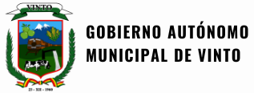

Explora los paisajes, cultura y tradiciones de este hermoso municipio
Explorar DestinosConoce nuestro municipio
Vinto es un municipio boliviano ubicado en el departamento de Cochabamba, conocido por su clima agradable, paisajes naturales y rica producción agrícola.
Con una población cálida y acogedora, Vinto ofrece a sus visitantes una experiencia única donde podrán disfrutar de tradiciones, gastronomía local y diversos atractivos turísticos.
Desde sus ferias dominicales hasta sus festivales culturales, hay siempre algo que descubrir en este encantador rincón de Bolivia.
Descubre nuestra gastronomía